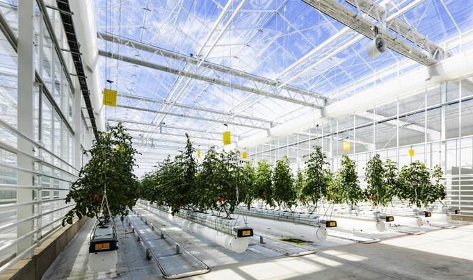

냉대기후 맞춤형 도시 인프라(1)
냉대기후
기상정보
냉대기후 맞춤형
도시 인프라(1)
냉대기후 맞춤형
도시 인프라(2)

원인: 겨울철 낮은 지역에서도 농작물을 기르기 위해
-> 온실 농업
- 기후 조건을 조절하여 특정 작물의 최적 조건을 제공할 수 있음
-> 농작물의 성장 속도와 생산성↥
- 자원 절약: 물과 비료 등의 자원 사용을 효율적으로 관리
ex. 관수 시스템 자동화